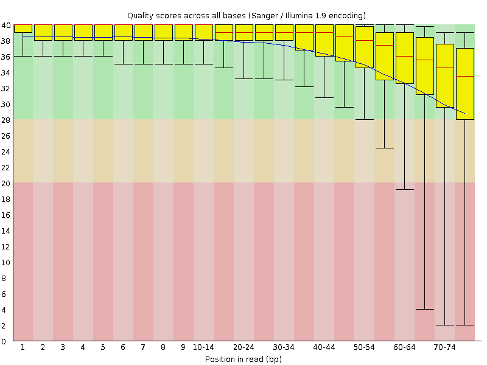
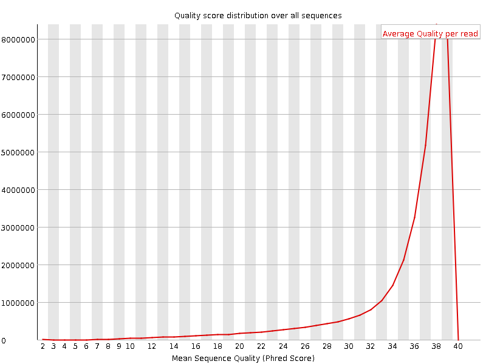
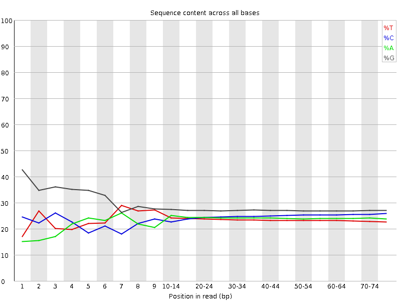
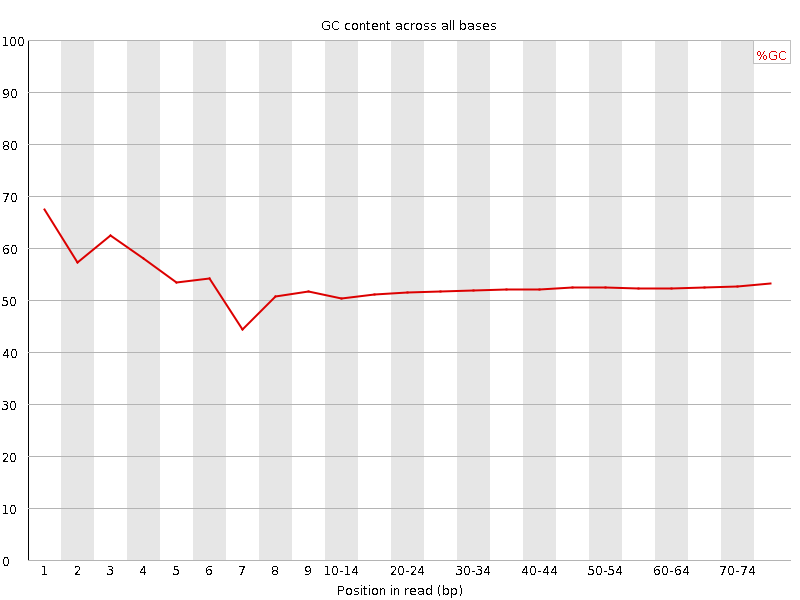
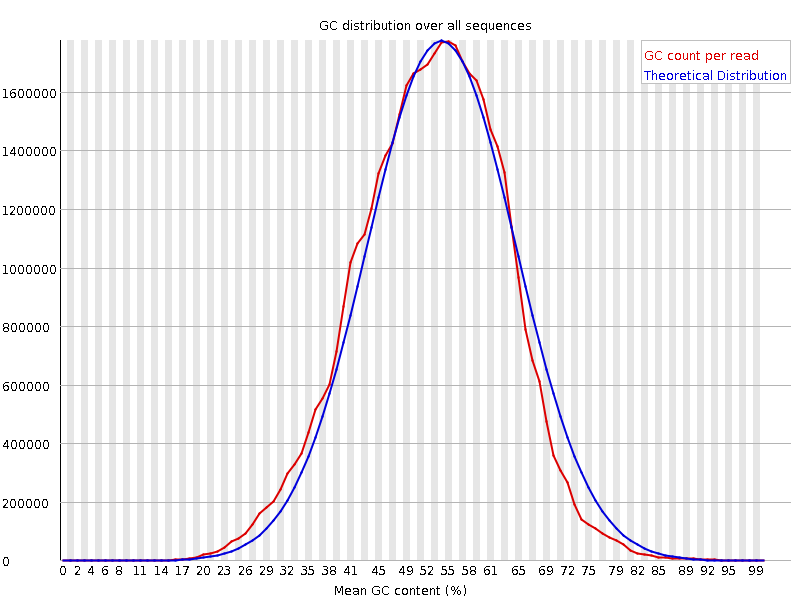
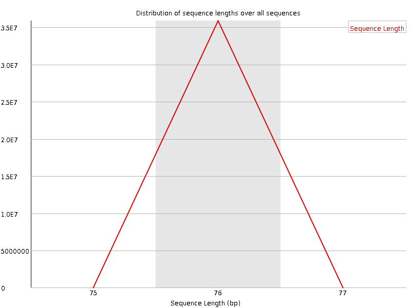
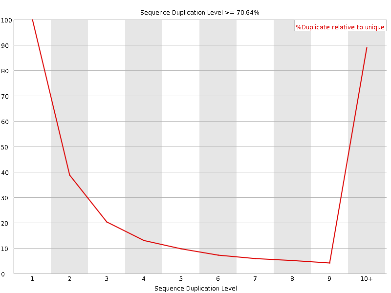
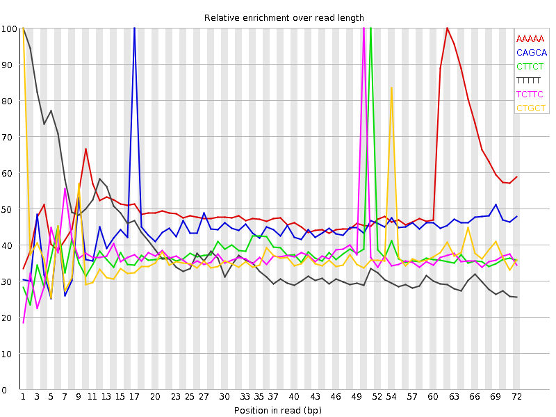

![[OK]](Icons/tick.png) Basic Statistics
Basic Statistics
| Measure | Value |
|---|---|
| Filename | SRR307906_1.fastq |
| File type | Conventional base calls |
| Encoding | Sanger / Illumina 1.9 |
| Total Sequences | 35869269 |
| Filtered Sequences | 0 |
| Sequence length | 76 |
| %GC | 52 |
Per base sequence quality

Per sequence quality scores

![[FAIL]](Icons/error.png) Per base sequence content
Per base sequence content

Per base GC content

Per sequence GC content

Per base N content

Sequence Length Distribution

Sequence Duplication Levels

![[WARN]](Icons/warning.png) Overrepresented sequences
Overrepresented sequences
| Sequence | Count | Percentage | Possible Source |
|---|---|---|---|
| GATCGGAAGAGCGGTTCAGCAGGAATGCCGAGACCGATATCGTATGCCGT | 75500 | 0.21048658672135193 | Illumina Paired End PCR Primer 2 (98% over 50bp) |
Kmer Content

| Sequence | Count | Obs/Exp Overall | Obs/Exp Max | Max Obs/Exp Position |
|---|---|---|---|---|
| AAAAA | 7056525 | 3.4981394 | 6.7572083 | 62 |
| CAGCA | 7313660 | 2.926425 | 6.6201735 | 17 |
| CTTCT | 5108440 | 2.5005116 | 6.6667957 | 51 |
| TTTTT | 4503330 | 2.411173 | 6.182234 | 1 |
| TCTTC | 4873480 | 2.3855019 | 6.421984 | 50 |
| CTGCT | 5756560 | 2.375445 | 6.381982 | 1 |
| CAGGA | 6485070 | 2.287893 | 5.5537276 | 20 |
| GCAGG | 7383320 | 2.2299945 | 5.0971437 | 19 |
| GGCAG | 7361090 | 2.2232802 | 7.0320444 | 1 |
| AGCAG | 6194645 | 2.185433 | 5.55669 | 18 |
| TGCTG | 5962165 | 2.1692238 | 6.1516633 | 2 |
| CTGGG | 6816545 | 2.0907688 | 5.4333034 | 1 |
| GGAAG | 6414055 | 1.9951344 | 5.8486605 | 5 |
| TTCTG | 4321900 | 1.8652356 | 5.152801 | 52 |
| AGGAA | 5002135 | 1.8174555 | 5.309256 | 21 |
| TCAGC | 4327285 | 1.7583599 | 5.607161 | 16 |
| TTCAG | 4052270 | 1.7221371 | 5.702897 | 15 |
| GAAGA | 4728580 | 1.7180631 | 5.8590746 | 6 |
| TGGGG | 6125920 | 1.6566528 | 5.067419 | 2 |
| GGGAG | 5959345 | 1.5869713 | 5.0734625 | 1 |
| GGGGG | 6704020 | 1.5283995 | 5.037307 | 1 |
| GGGGA | 5389315 | 1.4351726 | 5.756491 | 1 |
| AAGAG | 3913435 | 1.4218916 | 5.7115297 | 7 |
| GTGGG | 5254100 | 1.4208837 | 6.733602 | 1 |
| GTTCA | 3233205 | 1.37405 | 5.28512 | 14 |
| GTCTT | 2932075 | 1.2654182 | 5.1816344 | 49 |
| ATGCC | 3110095 | 1.2637639 | 5.041527 | 25 |